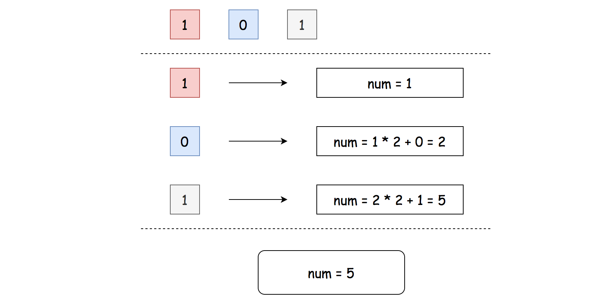

Here we have two subproblems:
To parse non-empty linked list and to retrieve the digit sequence which represents a binary number.
To convert this sequence into the number in decimal representation.
The first subproblem is easy because the linked list is guaranteed to be non-empty.
The second subproblem is to convert into . It could be solved in two ways. To use classical arithmetic is more straightforward
 Figure 1. Approach 1: num = num * 2 + x
and to use bitwise operators is faster
Figure 2. Approach 2: num = (num << 1) | x
Figure 3. Approach 1: num = num * 2 + x.
Initialize result number to be equal to head value: num = head.val.
This operation is safe because the list is guaranteed to be non-empty.
Parse linked list starting from the head: while head.next:
head.next.val. Update the result by shifting
it by one to the left and adding the current value:
num = num * 2 + head.next.val.
Return num.
Implementation
Complexity Analysis
Time complexity: .
Space complexity: .
Figure 4. Approach 2: num = (num << 1) | x
Initialize result number to be equal to head value: num = head.val.
This operation is safe because the list is guaranteed to be non-empty.
Parse linked list starting from the head: while head.next:
head.next.val. Update the result by shifting
it by one to the left and adding the current value using logical OR:
num = (num << 1) | head.next.val.
Return num.
Implementation
Complexity Analysis
Time complexity: .
Space complexity: .